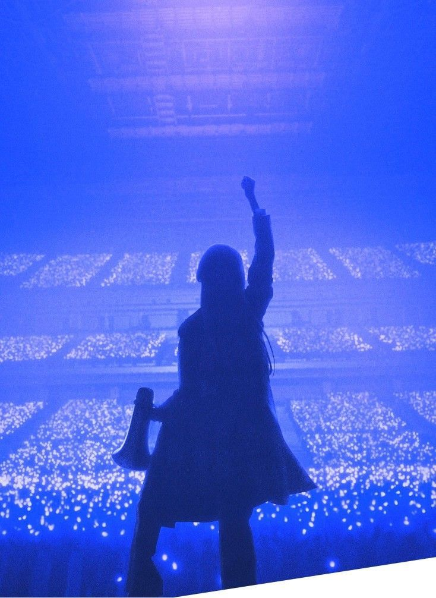

Ado comenzó su carrera musical gracias al misterio de Internet, impulsada por una enorme timidez y el deseo de expresarse sin ser juzgada por su apariencia.
Su mayor influencia y la razón por la que se enamoró de la música fue el fenómeno de Vocaloid, específicamente la idol virtual Hatsune Miku.
Ado descubrió este mundo cuando estaba en primer grado de primaria (a los 5 o 6 años) en la computadora de su padre.
Más adelante, en 2014, descubrió la plataforma de videos Niconico a través de su consola Nintendo 3DS.
Ado comenzó oficialmente su camino en la música a los 14 años.
Además de Hatsune Miku y el mundo Vocaloid, Ado tuvo varias influencias importantes que ayudaron a formar su estilo musical.
Le impactaron:
Odo
Shin Jidai
Usseewa
Gira Gira
Tot Musica
Watashi wa Saikyo
Show
Ashura-chan
Rebellion
Kura Kura
Value
Aishite Aishite Aishite
Backlight
RuLe
I'm a Controversy
MIRROR
MISSING
Fukakai
DIGNITY
KIRA
AiAiA
Vivarium
La rosa azul es el símbolo oficial y más importante de Ado.
Las canciones de Ado son publicadas principalmente por la discográfica Universal Music Japan.
Ado nació el 24 de octubre de 2002.
El nombre Ado proviene del teatro tradicional japonés llamado Kyōgen.
Entre ellos:
